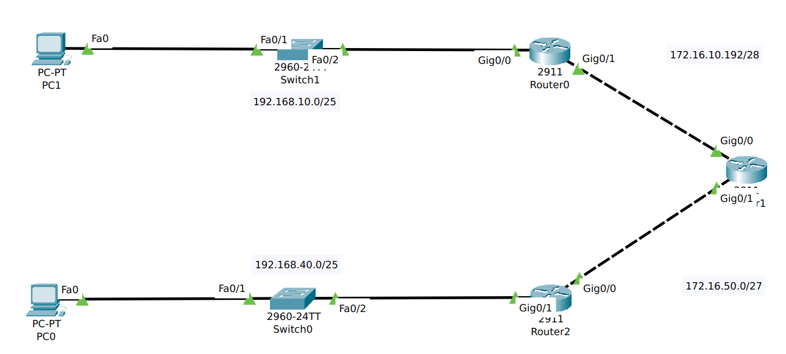
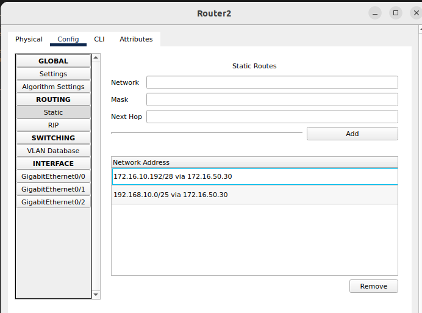

Planificación de redes es una de mis asignaturas favoritas.
A lo largo del anterior trimestre hemos estado aprendiendo como configurar redes,
ssh, seguridad de puertos, etc. Todo esto, lo hemos realizado en Packet Tracer.
Pero ahora, lo que estamos dando es enrutamiento y creando las tablas de enrutamiento de los routers
para que sepan hacia donde tienen que reenviar el paquete.
Adjunto foto de un ejemplo y tabla de enrutamiento en Packet Tracer

